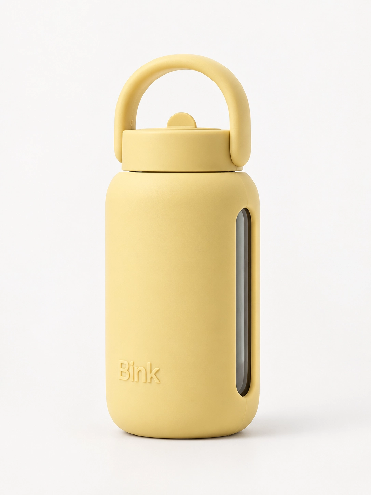
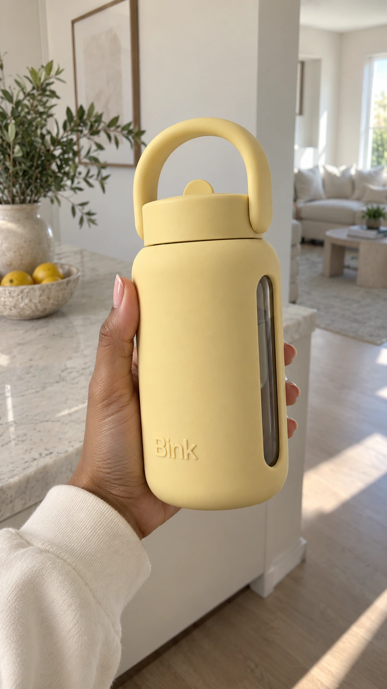
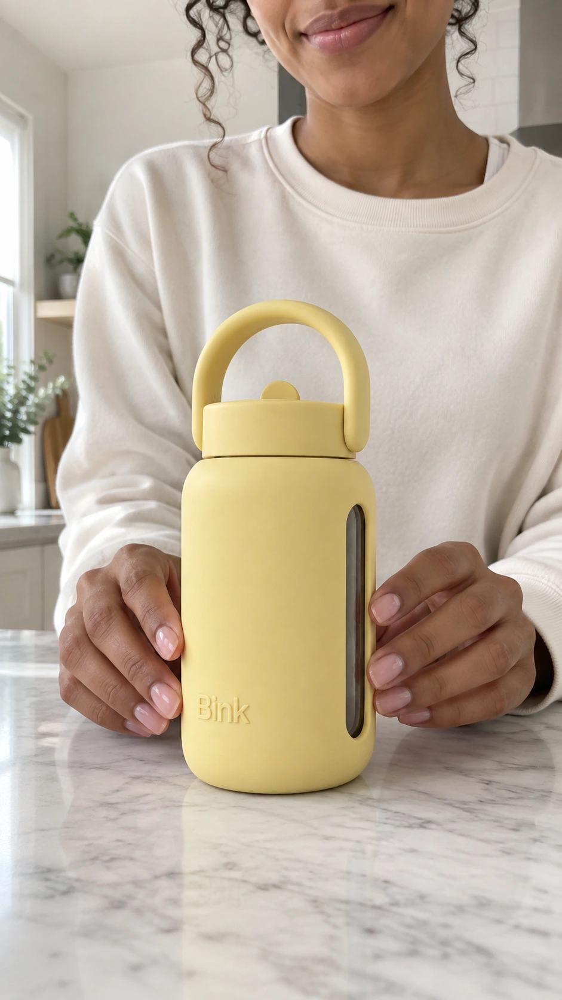
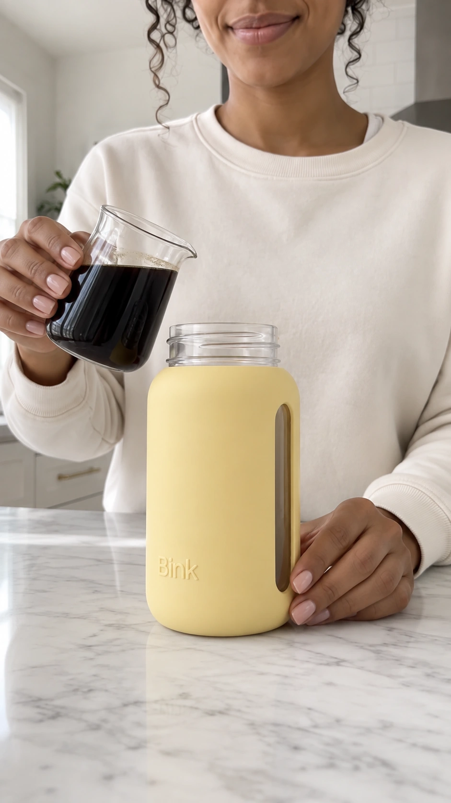
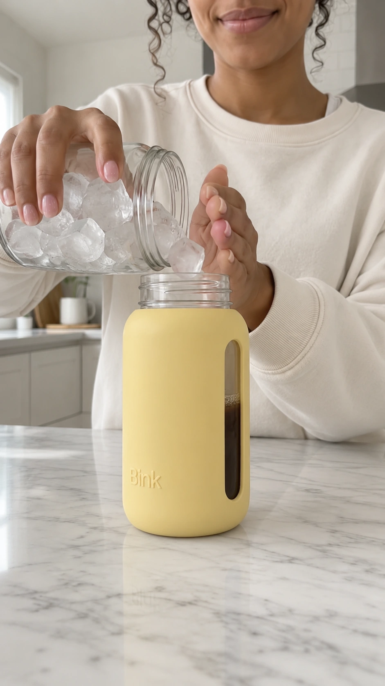
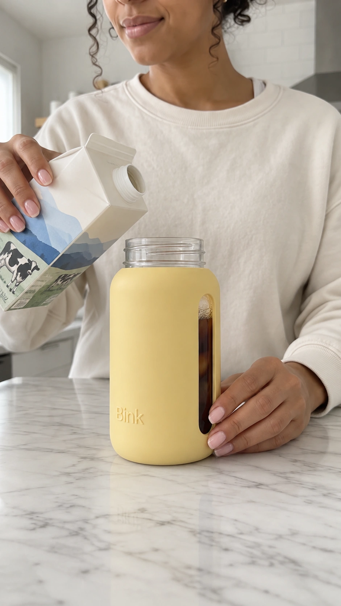
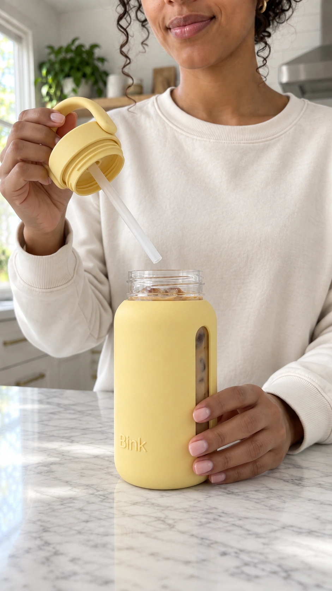
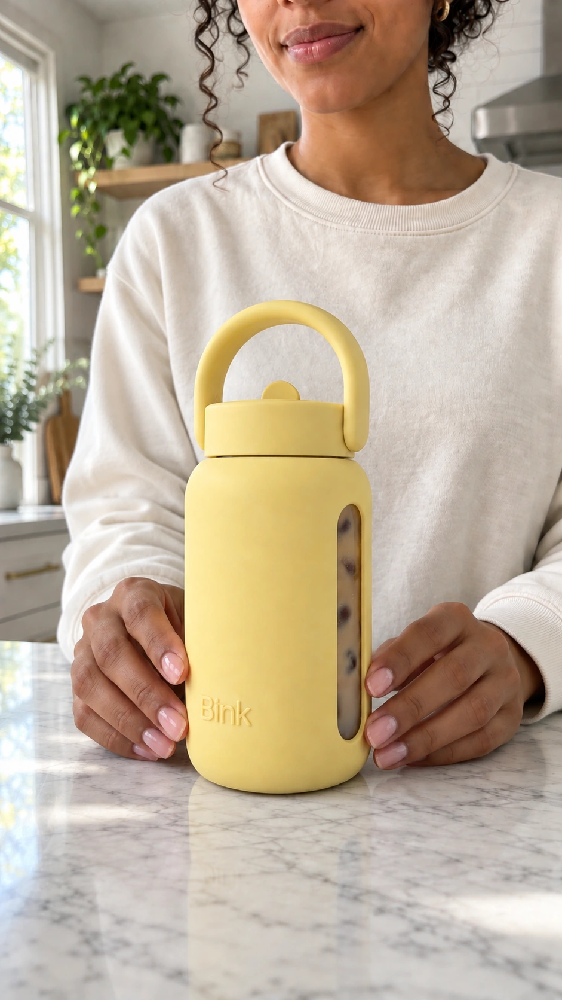
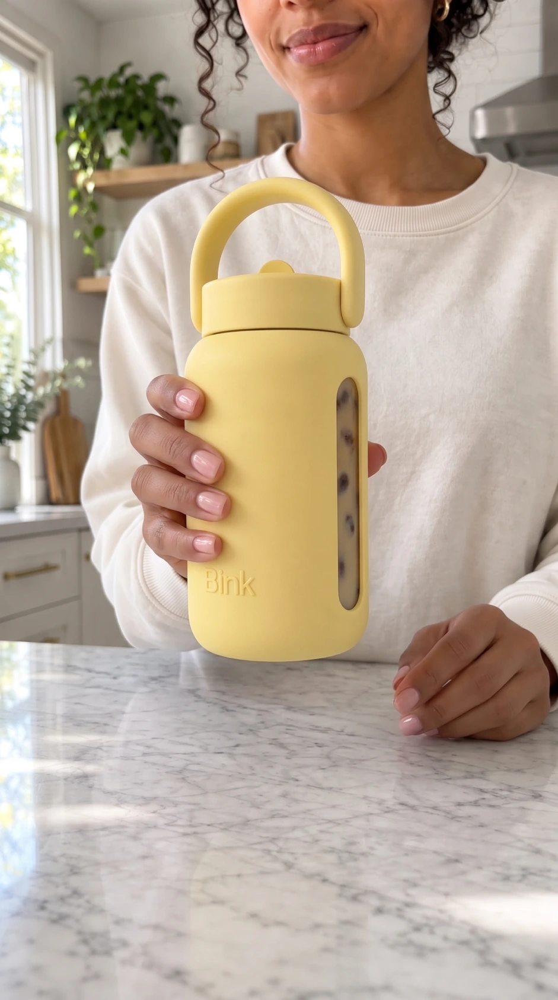
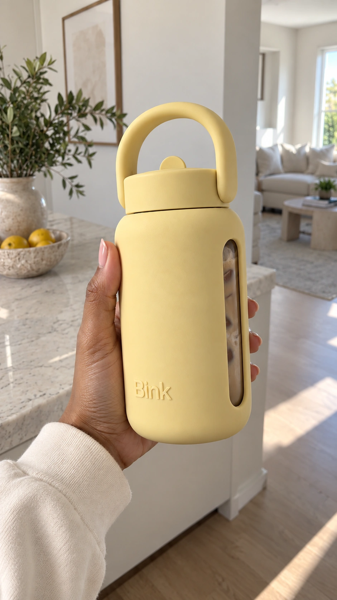

Videos
Bink
An AI-generated UGC-style video of a content creator reviewing the Bink bottle, built from a single model image, animated beat by beat, and cut together into one clip.

(01) — The process
The Process
I generated a base model image in ChatGPT, then generated a reference image for each beat the video needed: nine images feeding nine clips, following the full unboxing and drink-making sequence. Each reference image went into Google Flow to generate a short clip, and everything was cut and sequenced in CapCut.
(02) — The unboxing
The Unboxing

The base model image, showing off the bottle she just got.
The generated clip: she shows us the bottle.
(03) — On the counter
On the Counter
This reference image did double duty, generating both the tap and the open.

Reference image with the bottle set down on the counter.
Generated clip: tapping the bottle.
Generated clip: opening the bottle.
(04) — The coffee
The Coffee

Reference image, coffee concentrate in hand.
The generated clip: pouring the coffee concentrate into the bottle.
(05) — The ice
The Ice

Reference image, jar of ice cubes in hand.
The generated clip: pouring ice into the bottle.
(06) — The milk
The Milk

Reference image, milk carton in hand.
The generated clip: pouring milk into the bottle.
(07) — Closing the bottle
Closing the Bottle
For this clip I used two reference images together, one as the start frame and one as the end frame, so Google Flow could generate the motion of her closing the bottle between them.

Start frame: holding the cap.

End frame: bottle on the counter, filled.
The generated clip: closing the bottle.
(08) — The shake
The Shake

Reference image, bottle held up in the air.
The generated clip: shaking the bottle.
(09) — The reveal
The Reveal
The closing shot brings her back to the same setting as the opening image, this time with the bottle full.

Reference image, back in the original setting, bottle now filled.
The generated clip: showing us the finished drink.
(10) — The final cut
The Final Cut
All nine clips came together in CapCut, trimmed and sequenced into one continuous review, unboxing, tap and open, coffee, ice, milk, close, shake, and the reveal.
The final edited video.